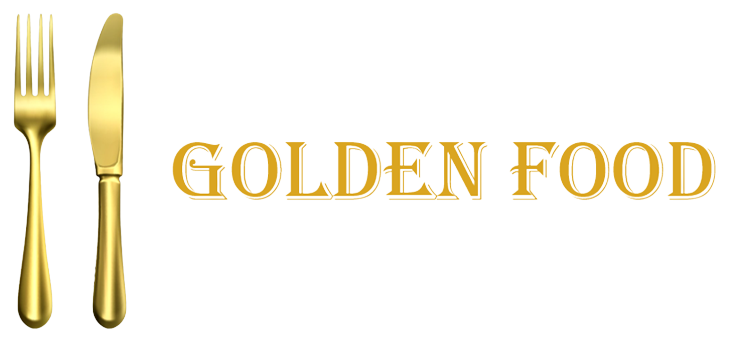
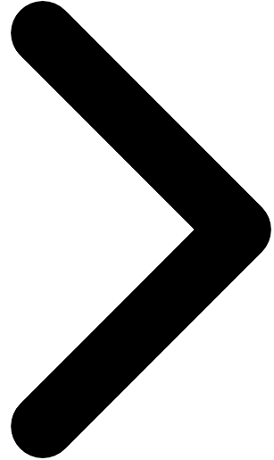
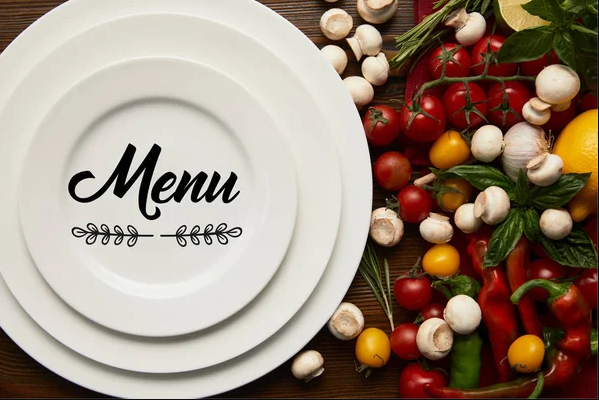
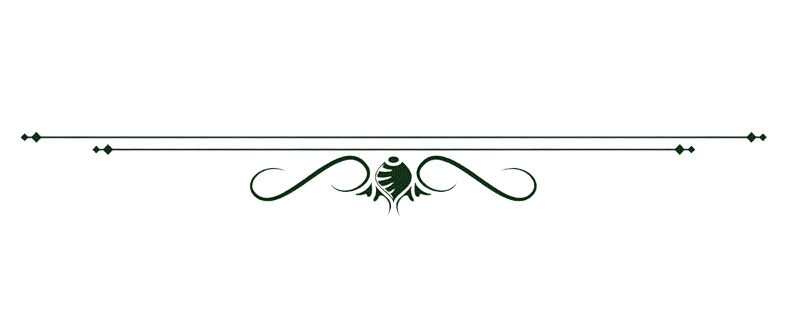

INFO
SCHULE
STANDORT
PERSONAL 
Willkommen zu Golden Food
Die Nummer eins, für geplantes Essen in der Rudolf Steiner Schule Mensa.

Esse mit Platz und Komfort. Geniesse deine Mahlzeit bei uns frisch zubereitet.

Bei uns werden nur Bio-Lebensmittel verarbeitet, sodass man beim Essen der Natur möglichst nah ist.